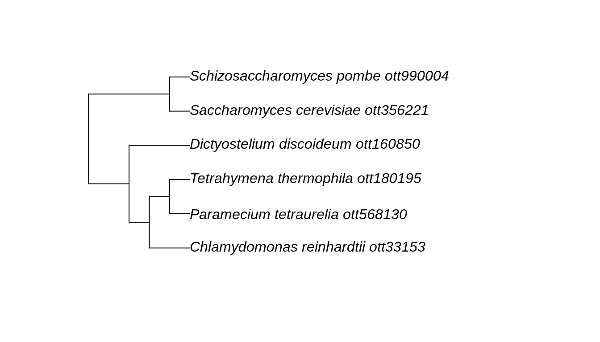
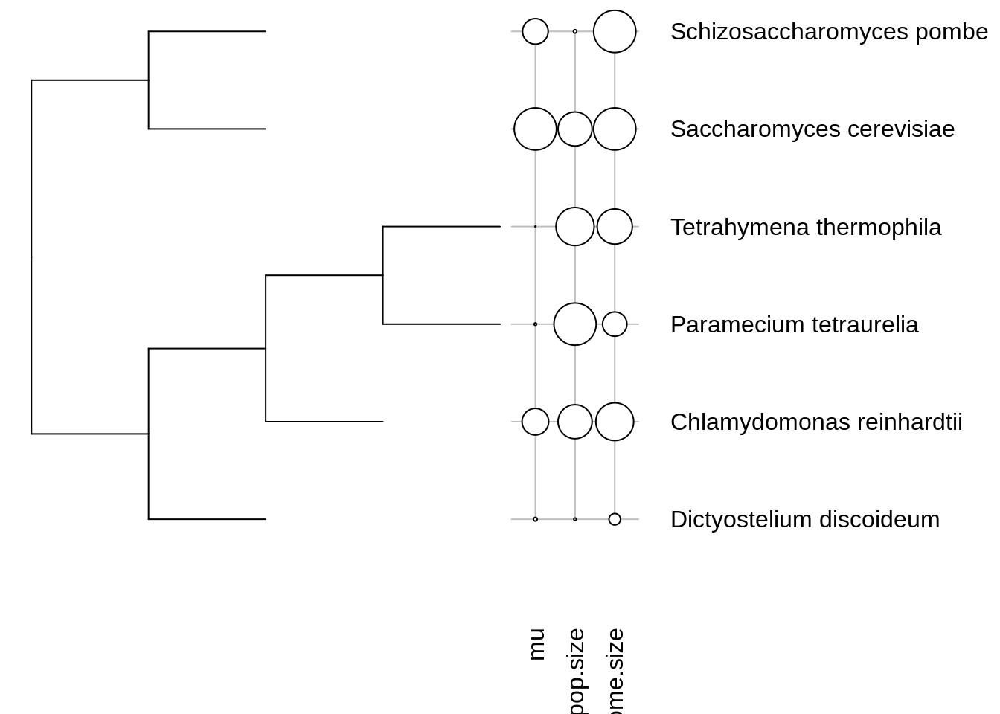

Connecting data to Open Tree trees
David Winter
2020-07-07
Source:vignettes/data_mashups.Rmd
data_mashups.RmdCombining data from OToL and other sources.
One of the major goals of rotl is to help users combine data from other sources with the phylogenetic trees in the Open Tree database. This examples document describes some of the ways in which a user might connect data to trees from Open Tree.
Get Open Tree IDs to match your data.
Let’s say you have a dataset where each row represents a measurement taken from one species, and your goal is to put these measurements in some phylogenetic context. Here’s a small example: the best estimate of the mutation rate for a set of unicellular Eukaryotes along with some other property of those species which might explain the mutation rate:
csv_path <- system.file("extdata", "protist_mutation_rates.csv", package = "rotl") mu <- read.csv(csv_path, stringsAsFactors = FALSE) mu
## species mu pop.size genome.size
## 1 Tetrahymena thermophila 7.61e-12 1.12e+08 1.04e+08
## 2 Paramecium tetraurelia 1.94e-11 1.24e+08 7.20e+07
## 3 Chlamydomonas reinhardtii 2.08e-10 1.00e+08 1.12e+08
## 4 Dictyostelium discoideum 2.90e-11 7.40e+06 3.40e+07
## 5 Saccharomyces cerevisiae 3.30e-10 1.00e+08 1.25e+08
## 6 Saccharomyces pombe 2.00e-10 1.00e+07 1.25e+08If we want to get a tree for these species we need to start by finding the unique ID for each of these species in the Open Tree database. We can use the Taxonomic Name Resolution Service (tnrs) functions to do this. Before we do that we should see if any of the taxonomic contexts, which can be used to narrow a search and avoid conflicts between different codes, apply to our group of species:
library(rotl) tnrs_contexts()
## Possible contexts:
## Animals
## Birds, Tetrapods, Mammals, Amphibians, Vertebrates
## Arthropods, Molluscs, Nematodes, Platyhelminthes, Annelids
## Cnidarians, Arachnids, Insects
## Fungi
## Basidiomycetes, Ascomycetes
## All life
## Bacteria
## SAR group, Archaea, Excavata, Amoebozoa, Centrohelida
## Haptophyta, Apusozoa, Diatoms, Ciliates, Forams
## Land plants
## Hornworts, Mosses, Liverworts, Vascular plants, Club mosses
## Ferns, Seed plants, Flowering plants, Monocots, Eudicots
## Rosids, Asterids, Asterales, Asteraceae, Aster
## Symphyotrichum, Campanulaceae, LobeliaHmm, none of those groups contain all of our species. In this case we can search using the All life context and the function tnrs_match_names:
taxon_search <- tnrs_match_names(names = mu$species, context_name = "All life") knitr::kable(taxon_search)
| search_string | unique_name | approximate_match | ott_id | is_synonym | flags | number_matches |
|---|---|---|---|---|---|---|
| tetrahymena thermophila | Tetrahymena thermophila | FALSE | 180195 | FALSE | 1 | |
| paramecium tetraurelia | Paramecium tetraurelia | FALSE | 568130 | FALSE | 1 | |
| chlamydomonas reinhardtii | Chlamydomonas reinhardtii | FALSE | 33153 | FALSE | 1 | |
| dictyostelium discoideum | Dictyostelium discoideum | FALSE | 160850 | FALSE | 1 | |
| saccharomyces cerevisiae | Saccharomyces cerevisiae | FALSE | 356221 | FALSE | 1 | |
| saccharomyces pombe | Schizosaccharomyces pombe | FALSE | 990004 | TRUE | 1 |
Good, all of our species are known to Open Tree. Note, though, that one of the names is a synonym. Saccharomyces pombe is older name for what is now called Schizosaccharomyces pombe. As the name suggests, the Taxonomic Name Resolution Service is designed to deal with these problems (and similar ones like misspellings), but it is always a good idea to check the results of tnrs_match_names closely to ensure the results are what you expect.
In this case we have a good ID for each of our species so we can move on. Before we do that, let’s ensure we can match up our original data to the Open Tree names and IDs by adding them to our data.frame:
mu$ott_name <- unique_name(taxon_search) mu$ott_id <- taxon_search$ott_id
Find a tree with your taxa
Now let’s find a tree. There are two possible options here: we can search for published studies that include our taxa or we can use the ‘synthetic tree’ from Open Tree. We can try both approaches.
Published trees
Before we can search for published studies or trees, we should check out the list of properties we can use to perform such searches:
## $study_properties
## [1] "dc:subject" "dc:date"
## [3] "ot:messages" "dc:title"
## [5] "skos:changeNote" "ot:studyPublicationReference"
## [7] "ot:candidateTreeForSynthesis" "ot:taxonLinkPrefixes"
## [9] "treebaseId" "ot:focalCladeOTTTaxonName"
## [11] "prism:modificationDate" "dc:contributor"
## [13] "dc:creator" "xmlns"
## [15] "ot:curatorName" "prism:number"
## [17] "tb:identifier.study.tb1" "id"
## [19] "ot:otusElementOrder" "ot:dataDeposit"
## [21] "skos:historyNote" "ot:treesElementOrder"
## [23] "prism:endingPage" "prism:section"
## [25] "nexml2json" "ot:notIntendedForSynthesis"
## [27] "ntrees" "treesById"
## [29] "about" "prism:publicationName"
## [31] "tb:identifier.study" "ot:studyYear"
## [33] "otusById" "nexmljson"
## [35] "ot:annotationEvents" "prism:doi"
## [37] "ot:studyId" "prism:pageRange"
## [39] "dc:publisher" "ot:studyPublication"
## [41] "prism:volume" "tb:title.study"
## [43] "ot:agents" "generator"
## [45] "prism:publicationDate" "ot:tag"
## [47] "ot:comment" "ot:focalClade"
## [49] "prism:startingPage" "xhtml:license"
## [51] "prism:creationDate" "version"
## [53] "dcterms:bibliographicCitation"
##
## $tree_properties
## [1] "ot:messages" "xsi:type"
## [3] "ot:nearestTaxonMRCAName" "meta"
## [5] "ot:specifiedRoot" "ot:reasonsToExcludeFromSynthesis"
## [7] "tb:quality.tree" "ot:branchLengthTimeUnit"
## [9] "ot:nodeLabelMode" "ot:rootNodeId"
## [11] "ot:inGroupClade" "ot:ottTaxonName"
## [13] "ot:branchLengthDescription" "ot:studyId"
## [15] "ot:MRCAName" "ot:unrootedTree"
## [17] "tb:kind.tree" "tb:type.tree"
## [19] "edgeBySourceId" "ot:nodeLabelDescription"
## [21] "nodeById" "ot:curatedType"
## [23] "ot:nearestTaxonMRCAOttId" "ot:tag"
## [25] "rootedge" "label"
## [27] "ntips" "tb:ntax.tree"
## [29] "ot:ottId" "ot:nodeLabelTimeUnit"
## [31] "ot:outGroupEdge" "ot:branchLengthMode"
## [33] "ot:MRCAOttId"We have ottIds for our taxa, so let’s use those IDs to search for trees that contain them. Starting with our first species Tetrahymena thermophila we can use studies_find_trees to do this search.
studies_find_trees(property = "ot:ottId", value = as.character(ott_id(taxon_search)[1]))
## study_ids n_trees tree_ids
## 1 ot_1587 1 tree1
## 2 ot_1589 1 tree1
## 3 ot_409 2 tree1, tree2
## 4 ot_564 1 Tr85317
## 5 ot_579 1 Tr60046
## 6 ot_700 1 tree1
## 7 ot_73 1 tree1
## 8 ot_766 1 Tr85440
## 9 ot_767 1 tree1
## 10 ot_87 1 Tr64119
## 11 ot_97 9 tree1, tree2, tree3, tree4, tree5, ...
## 12 pg_1276 3 tree2569, tree2570, tree5750
## 13 pg_239 2 tree111, tree112
## 14 pg_2413 2 tree5093, tree5094
## 15 pg_2430 1 tree5141
## 16 pg_2618 2 tree6129, tree6130
## 17 pg_2760 1 tree6375
## 18 pg_2822 1 tree6569
## 19 pg_2847 3 tree6609, tree6610, tree6611
## 20 pg_2925 1 tree6756
## 21 pg_305 6 tree5968, tree5969, tree5970, tree5971, tree5972, ...
## 22 pg_310 3 tree259, tree260, tree261
## 23 pg_312 2 tree263, tree264
## 24 pg_313 1 tree6681
## 25 pg_425 4 tree5976, tree5977, tree5978, tree5979
## 26 pg_438 1 tree554
## candidate study_year
## 1 2015
## 2 2015
## 3 tree2 2015
## 4 Tr85317 2015
## 5 2013
## 6 tree1 2016
## 7 tree1 2013
## 8 2015
## 9 tree1 2016
## 10 Tr64119 2014
## 11 tree1, tree2, tree3, tree4, tree5, tree6, tree7, tree8, tree9 2011
## 12 2011
## 13 tree111 2010
## 14 2011
## 15 2004
## 16 tree6130 2011
## 17 tree6375 2014
## 18 2011
## 19 tree6611 2014
## 20 2014
## 21 2010
## 22 2011
## 23 tree264 2011
## 24 tree6681 2009
## 25 tree5978, tree5976 2012
## 26 tree554 2009
## title
## 1 'Phylogenomic analyses reveal subclass Scuticociliatia as the sister group of subclass Hymenostomatia within class Oligohymenophorea'
## 2 'Phylogenomic analyses reveal subclass Scuticociliatia as the sister group of subclass Hymenostomatia within class Oligohymenophorea'
## 3 Tree of life reveals clock-like speciation and diversification
## 4 'The alveolate translation initiation factor 4E family reveals a custom toolkit for translational control in core dinoflagellates'
## 5 'Convergent evolution of heat-inducibility during subfunctionalization of the Hsp70 gene family'
## 6 'A new view of the tree of life'
## 7 Deep relationships of Rhizaria revealed by phylogenomics: A farewell to Haeckel’s Radiolaria
## 8 'Bacterial proteins pinpoint a single eukaryotic root'
## 9 'Untangling the early diversification of eukaryotes: a phylogenomic study of the evolutionary origins of Centrohelida
## 10 'Dinoflagellate phylogeny revisited: Using ribosomal proteins to resolve deep branching dinoflagellate clades'
## 11 'Multigene phylogenetic analyses including diverse radiolarian species support the “Retaria” hypothesis — The sister relationship of Radiolaria and Foraminifera'
## 12
## 13 Broadly sampled multigene analyses yield a well-resolved eukaryotic tree of life
## 14 Rooting the eukaryotic tree with mitochondrial and bacterial proteins
## 15
## 16 'Ultrastructure and LSU rDNA-based Phylogeny of Peridinium lomnickii and Description of Chimonodinium gen. nov. (Dinophyceae)'
## 17 'Dinoflagellate phylogeny revisited: Using ribosomal proteins to resolve deep branching dinoflagellate clades'
## 18 Estimating the timing of early eukaryotic diversification with multigene molecular clocks
## 19 'An Alternative Root for the Eukaryote Tree of Life'
## 20 Building a phylogenomic pipeline for the eukaryotic tree of life? Addressing deep phylogenies with genome-scale data
## 21 Broadly sampled multigene analyses yield a well-resolved eukaryotic tree of life
## 22 Subulatomonas tetraspora nov
## 23 Multigene phylogenies of diverse Carpediemonas-like organisms identify the closest relatives of 'amitochondriate' diplomonads and retortamonads
## 24 Multigene evidence for the placement of a heterotrophic amoeboid lineage Leukarachnion sp
## 25 'Turning the Crown Upside Down: Gene Tree Parsimony Roots the Eukaryotic Tree of Life'
## 26 Phylogenetic analysis of 73 060 taxa corroborates major eukaryotic groups
## study_doi
## 1 http://dx.doi.org/10.1016/j.ympev.2015.05.007
## 2 http://dx.doi.org/10.1016/j.ympev.2015.05.007
## 3 http://dx.doi.org/10.1093/molbev/msv037
## 4 http://dx.doi.org/10.1186/s12862-015-0301-9
## 5 http://dx.doi.org/10.1186/1471-2148-13-49
## 6 http://dx.doi.org/10.1038/nmicrobiol.2016.48
## 7 http://dx.doi.org/10.1016/j.ympev.2012.12.011
## 8 http://dx.doi.org/10.1073/pnas.1420657112
## 9 http://dx.doi.org/10.1098/rspb.2015.2802
## 10 http://dx.doi.org/10.1016/j.ympev.2013.10.007
## 11 http://dx.doi.org/10.1016/j.marmicro.2011.06.007
## 12 http://dx.doi.org/10.1186/1756-0500-4-330
## 13 http://dx.doi.org/10.1093/sysbio/syq037
## 14 http://dx.doi.org/10.1093/molbev/msr295
## 15 http://dx.doi.org/10.1007/BF02870199
## 16 http://dx.doi.org/10.1016/j.protis.2011.03.003
## 17 http://dx.doi.org/10.1016/j.ympev.2013.10.007
## 18 http://dx.doi.org/10.1073/pnas.1110633108
## 19 http://dx.doi.org/10.1016/j.cub.2014.01.036
## 20 http://dx.doi.org/10.1371/currents.tol.c24b6054aebf3602748ac042ccc8f2e9
## 21 http://dx.doi.org/10.1093/sysbio/syq037
## 22 http://dx.doi.org/10.1016/j.protis.2011.05.002
## 23 http://dx.doi.org/10.1016/j.protis.2011.12.007
## 24 http://dx.doi.org/10.1016/j.protis.2009.01.001
## 25 http://dx.doi.org/10.1093/sysbio/sys026
## 26 http://dx.doi.org/10.1111/j.1096-0031.2009.00255.x
## n_matched_trees match_tree_ids
## 1 1 NULL
## 2 1 NULL
## 3 1 NULL
## 4 1 NULL
## 5 1 NULL
## 6 1 NULL
## 7 1 NULL
## 8 1 NULL
## 9 1 NULL
## 10 1 NULL
## 11 9 NULL, NULL, NULL, NULL, NULL, NULL, NULL, NULL, NULL
## 12 1 NULL
## 13 2 NULL, NULL
## 14 2 NULL, NULL
## 15 1 NULL
## 16 1 NULL
## 17 1 NULL
## 18 1 NULL
## 19 3 NULL, NULL, NULL
## 20 1 NULL
## 21 6 NULL, NULL, NULL, NULL, NULL, NULL
## 22 3 NULL, NULL, NULL
## 23 1 NULL
## 24 1 NULL
## 25 4 NULL, NULL, NULL, NULL
## 26 1 NULLWell… that’s not very promising. We can repeat that process for all of the IDs to see if the other species are better represented.
hits <- lapply(mu$ott_id, studies_find_trees, property = "ot:ottId", detailed = FALSE) sapply(hits, function(x) sum(x[["n_matched_trees"]]))
## [1] 48 51 128 70 17 86OK, most of our species are not in any of the published trees available. You can help fix this sort of problem by making sure you submit your published trees to Open Tree.
A part of the synthesis tree
Thankfully, we can still use the complete Tree of Life made from the combined results of all of the published trees and taxonomies that go into Open Tree. The function tol_induced_subtree will fetch a tree relating a set of IDs.
Using the default arguments you can get a tree object into your R session:
ott_in_tree <- ott_id(taxon_search)[is_in_tree(ott_id(taxon_search))] tr <- tol_induced_subtree(ott_ids = ott_in_tree)
## Warning in collapse_singles(tr, show_progress): Dropping singleton nodes with
## labels: mrcaott2ott276, mrcaott2ott142555, mrcaott2ott1551, mrcaott2ott7623,
## Chloroplastida ott361838, Chlorophyta ott979501, mrcaott185ott42071,
## mrcaott185ott1426, mrcaott1426ott1544, mrcaott1544ott8659, mrcaott1544ott15345,
## mrcaott1544ott9282, mrcaott9389ott818260, mrcaott9389ott23557,
## mrcaott23557ott527099, mrcaott148ott902, SAR ott5246039, Alveolata ott266751,
## Ciliophora (phylum in subkingdom SAR) ott302424, Intramacronucleata
## ott340382, mrcaott1546ott1671, Conthreep ott5248773, mrcaott1671ott16129,
## Peniculia ott1002116, Paramecium (genus in subkingdom SAR) ott568126,
## mrcaott11752ott13570, Hymenostomatia ott5257367, Tetrahymena (genus in
## subkingdom SAR) ott47284, mrcaott295406ott523463, mrcaott295406ott523462,
## Amoebozoa ott1064655, mrcaott3973ott15653, mrcaott3973ott26103,
## mrcaott26103ott273110, mrcaott26103ott229626, Dictyostelia ott835575,
## Dictyosteliales ott4008839, Dictyosteliaceae ott4008841, Dictyostelium
## ott999665, Opisthokonta ott332573, Nucletmycea ott5246132, Fungi ott352914,
## mrcaott109ott3465, mrcaott109ott67172, mrcaott109ott1423, mrcaott109ott9352,
## h2007-2 ott5576447, h2007-1 ott5584405, Dikarya ott656316, Saccharomycetales
## ott4085960, Saccharomycetaceae ott989994, Saccharomyces ott908546,
## Schizosaccharomycetes ott921286, Schizosaccharomycetidae ott5670481,
## Schizosaccharomycetales ott508517, Schizosaccharomycetaceae ott990009,
## Schizosaccharomyces ott990008plot(tr)

Connect your data to the tips of your tree
Now we have a tree for of our species, how can we use the tree and the data together?
The package phylobase provide an object class called phylo4d, which is designed to represent a phylogeny and data associated with its tips. In oder to get our tree and data into one of these objects we have to make sure the labels in the tree and in our data match exactly. That’s not quite the case at the moment (tree labels have underscores and IDs appended):
mu$ott_name[1]
## $`Tetrahymena thermophila`
## [1] "Tetrahymena thermophila"tr$tip.label[4]
## [1] "Dictyostelium_discoideum_ott160850"rotl provides a convienence function strip_ott_ids to deal with these.
tr$tip.label <- strip_ott_ids(tr$tip.label, remove_underscores = TRUE) tr$tip.label %in% mu$ott_name
## [1] TRUE TRUE TRUE TRUE TRUE TRUEOk, now the tips are together we can make a new dataset. The phylo4d() functions matches tip labels to the row names of a data.frame, so let’s make a new dataset that contains just the relevant data and has row names to match the tree
library(phylobase) mu_numeric <- mu[, c("mu", "pop.size", "genome.size")] rownames(mu_numeric) <- mu$ott_name tree_data <- phylo4d(tr, mu_numeric)
And now we can plot the data and the tree together
plot(tree_data)

Find external data associated with studies, trees and taxa from Open Tree
In the above example we looked for a tree that related species in another dataset. Now we will go the other way, and try to find data associated with Open Tree records in other databases.
Get external data from a study
Let’s imagine you were interested in extending or reproducing the results of a published study. If that study is included in Open Tree you can find it via studies_find_studies or studies_find_trees and retrieve the published trees with get_study. rotl will also help you find external. The function study_external_IDs retrieves the DOI for a given study, and uses that to gather some more data:
extra_data <- try(study_external_IDs("pg_1980"), silent = TRUE) if (!inherits(extra_data, "try-error")) { extra_data }
## External data identifiers for study
## $doi: 10.1016/j.ympev.2006.04.016
## $pubmed_id: 16762568
## $nucleotide_ids: vector of 58 IDs
## $external_data_url http://purl.org/phylo/treebase/phylows/study/TB2:S1575Here the returned object contains an external_data_url (in this case a link to the study in Treebase), a pubmed ID for the paper and a vector IDs for the NCBI’s nuleotide database. The packages treebase and rentrez provide functions to make use of these IDs within R.
As an example, let’s use rentrez to download the first two DNA seqences and print them.
library(rentrez) seqs <- try(entrez_fetch(db = "nucleotide", id = extra_data$nucleotide_ids[1:2], rettype = "fasta"), silent = TRUE) if (inherits(seqs, "try-error")) { cat("NCBI temporarily down.") } else { cat(seqs) }
## >AM181011.1 Plectroninia neocaledoniense partial 28S rRNA gene, specimen voucher G316300 (Queensland Museum)
## GCTAGCAAGCGCGTCGGTGGTTCAGCCGGCTGGTCTCGTCGAGTTGTCGGTGTGCGGATCCGAACGGACC
## GCGGCCGATGGCGTCGGCGGGCAAGCTGTGGTGCACTCTGTCGGCGTGCGCGTCAGCGTCGGTTTCGGCC
## GGACGACGAGGCGCTCGGGGAAGGTAGCTGGACCGGTCTTCGGTGCAGTGTTATAGCCCTGGGCCGCTGG
## GTTCGGCGTTTGGGACCGAGGAGAGAGATGATCGCTGCAGCGCCTGTCTCCCTCTCGAGGGGGGCTAGCC
## AGCCGCTGTTTGGGTGGCGTCACTGGCGGAGGACTGCACGCAGTGCTTCGCCGGTGGTCGTGTCCAGGCG
## GGCGGTGTGGGTATAGAGGCGCTTAGGACGCTGGCGTCCAAATGGCCGTGCGCGACCCGTCTTGAAACAC
## GGACCAAGGAGTCTAGCATGTGCGCGAGTCTTAGGGTGTGGAAGCCCTCGGGCGCAATGAAAGTGAAGGG
## CCGTCGTCTCTCGGGGCTGCGGTGTGAGGTGAGAGCCGTCGCCGTCGGGTGGCGGTGCATCATCGGCCGG
## TCCATCCTGCTCTCAGGAGGATCTGCGCAAGAGCGTGTTTGCTGGGACCCGAAAGATGGTGAACTATGCC
## TGAATAGGGTGAAGCCAGAGGAAACTCTGGTGGAGGCTCGTAGCGGTTCTGACGTGCAAATCGATCGTCA
## AATTTGGGTATAGGGGCGAAAGACTAATCGAACCATCTAGTAGCTGGTTCCCTCCGAAGTTTCCCTCAGG
## ATAGCTGGAACTCGTCTTGACACAGTTTTATCAGGTAAAGCGAATGATTAGAGGTCTTGGGGGTGAAACA
## CCCTCAACCTATTCTCAAACTTTAAATAGGTAAGAAGCGCGACTTGCTCAATTGAAGTGGCGCGCAGTGA
## ATGTGAGTTCCAAGTGGGCCATTTTTGGTAAGCAGAACTGGCGATGCGGGATGAACCGAACGCTCGGTTA
## AGGTGCCCAAGTCGACGCTCATCAGACCCCAGAAAAGGTGTTGGTCGATATAGACAGCAGGACGGTGGCC
## ATGGAAGTCGGAATCCGCTAAGGAGTGTGTAACAACTCACCTGCCGAATCAACTAGCCCTGAAAATGGAT
## GGCGCTCAAGCGTCGCACCTATACCGAGCCGTCGTGGTAAATGCCAGGCCACGACGAGTAGGAGGGCGCG
## GTGGTCGTGACGCAGCCCTTGGCGCGAGCCTGGGCGAAACGGCCTCCGGTGCAGATCTTGGTGGTAGTAG
## CAAATATTCAAATGAGAGCTTTGAAGACCGAAGTGGAGAAAGGTTCCATGTGAACAGCAGTTGGACATGG
## GTTAGTCGATCCTAAGAGATAGGGAAGTTCCGTGTGAAAGTGCGCAATGCGCTTCTGTGCTGCGCGCCTC
## CTATCGAAAGGGAATCGGGTTAATATTCCCGAACCGGAAGGCGGATATCTCTGGCTCTCGGGTCAGGAGC
## GGCAACGCAAGCGTACTGCGAGACGTCGGCGGGGGCTCCGGGAAGAGTTGTCTTTTCTTTTTAACGCAGT
## CGCCATCCCTGGAATCGGTTTGCCCGGAGATAGGGTTGGCTGGCTCGGTAAAGCAGCACACTTCATGTGC
## TGTCCGGTGCGCTCTCGACGGCCCTTGAAAATCGCAGGTGTGCATCGATTCTCGCATCCGGTCGTACTCA
## TAACCGCATCAGGTCTCCAAGGT
##
## >AM181010.1 Eilhardia schulzei partial 28S rRNA gene, specimen voucher G316071 (Queensland Museum)
## GCTAGTAATGTACGTTGGTGGTTCAGCCGGCTAGTCTTGTCGAGTCGTCGTGTGGTGGATCCGACTGGAC
## CGTCCGCGGTGGTGTCGGCGGGCGAGCTGTGGTGCACTCTACGGACGTGCGCGTCAGCGTCGGTTCTCGA
## TGGGCGATAAGGTGCGTGGGGGAAGGTGGCTCGGTCCTTGGGAACTGAGTGTTACAGACCCTGGTGCTGG
## GCTCGTCGTGGGACCGAGGAGAGAGAGAGATGATCGCTGCGGCACCTGCCCCGTTGTCATTTTTCGGGGC
## TAGCCAGCCGTTTGTCAGGTGTGCGTCGGACGTTGAGGACTGCACGCAGTGCTGGACGTGGAGGCGTGAT
## CTGATGGCGGTGTGGGCATTAGAGGTGCCTAGGACGCTGGCGTCCAAATGGCCGTGCGCGACCCGTCTTG
## AAACACGGACCAAGGAGTCTAACATGTGCGCGAGTCTTAGGGTGTGCAAGCCCTCGGGCGCAATGAAAGT
## GAAGGCTCGGCGGCGCTAGTCGAGCTGAGGTGAGAGCCGTGGCCGTTGCATGTGGCGGCGGCGGCGCATC
## ATCGGCCGGTCCATCCTGCTCTCAGGGGGATCCGAGCAAGAGCGTATTTGTTGGGACCCGAAAGATGGTG
## AACTATGCCTGAATAGGGTGAAGCCAGAGGAAACTCTGGTGGAGGCTCGTAGCGATTCTGACGTGCAAAT
## CGATCGTCAAATTTGGGTATAGGGGCGAAAGACTAATCGAACCATCTAGTAGCTGGTTCCCTCCGAAGTT
## TCCCTCAGGATAGCTGGAGCTCTTGGACACAGTTTTATCAGGTAAAGCGAATGATCAGAGGTCTTGGGGG
## TGAAACACCCTCAACCTATTCTCAAACTTTAAATCGGTAAGAAGCGCGACTTGCTGAATTGAAGCCGCGC
## GCAAGCAATGTGAGTTCCAAGTGGGCCATTTTTGGTAAGCAGAACTGGCGATGCGGGATGAACCGAACGC
## TGGGTTAAGGTGCCAAAGTCGACGCTCATCAGACCCCAGAAAAGGTGTTGGTTGATATAGACAGCAGGAC
## GATGGCCATGGAAGTCGGAATCCGCTAAGGAGTGTGTAACAACTCACCTGCCGAATCAACTAGCCCTGAA
## AATGGATGGCGCTCAAGCGTCGCACCTATACCGGGCCGTCGTCGCAAATGCCAGGCGACGACGAGTAGGA
## GGGCGCAGTGGTCGTCATGCAGCCCTTGGCGTGAGCCTGGGTCAAACGGCCTCTGGTGCAGATCTTGGTG
## GTAGTAGCAAATATTCAAATGAGAGCTTTGAAGACCGAAGTGGAGAAAGGTTCCATGTGAACAGCAGTTG
## GACATGGGTTAGTCGATCCTAAGTGATAGGGGAGCTCCGTATGAAAGTGCGCAATCGGCCCTGCTTGTGT
## CGCCTTGCGCCACCTATCGAAAGGGAATCGGGTTAATATTCCCGAACCGGAAGGCGGATTTTCTCTGGCT
## CTCGGGTCAGGAGCGGCAACGCTAGCGAACCGCGAGACGTCGGCGGGGGCTCCGGGAAGAGTTGTCTTTT
## CTTTTTAACGCAGTCGCCATCCCTGGAATCGGTTTGCCCGGAGATAGGGTTGGCTGGCTCGGTAAAGCAG
## CACACTTCATGTGCTGTCCGGTGCGCTCTCGACGGCCCTTGAAAATCGCGGCGAGTGTAGTCTGATTTTC
## GCATCCGTTCGTACTCATAACCGCATCAGGTCTCCAAGGTYou could further process these sequences in R with the function read.dna from ape or save them to disk by specifying a file name with cat.
Find a OTT taxon in another taxonomic database
It is also possible map an Open Tree taxon to a record in another taxonomic database. For instance, if we wanted to search for data about one of the tips of the sub-tree we fetched in the example above we could do so using taxon_external_IDs:
Tt_ids <- taxon_external_IDs(mu$ott_id[2]) Tt_ids
## source id
## 1 silva AY102613
## 2 ncbi 5888
## 3 gbif 7415807A user could then use rgbif to find locality records using the gbif ID or rentrez to get genetic or bibliometric data about from the NCBI’s databases.
What next
The demonstration gets you to the point of visualizing your data in a phylogenetic context. But there’s a lot more you do with this sort of data in R. For instance, you could use packages like ape, caper, phytools and mcmcGLMM to perform phylogenetic comparative analyses of your data. You could gather more data on your species using packages that connect to trait databases like rfishbase, AntWeb or rnpn which provides data from the US National Phenology Network. You could also use rentrez to find genetic data for each of your species, and use that data to generate branch lengths for the phylogeny.